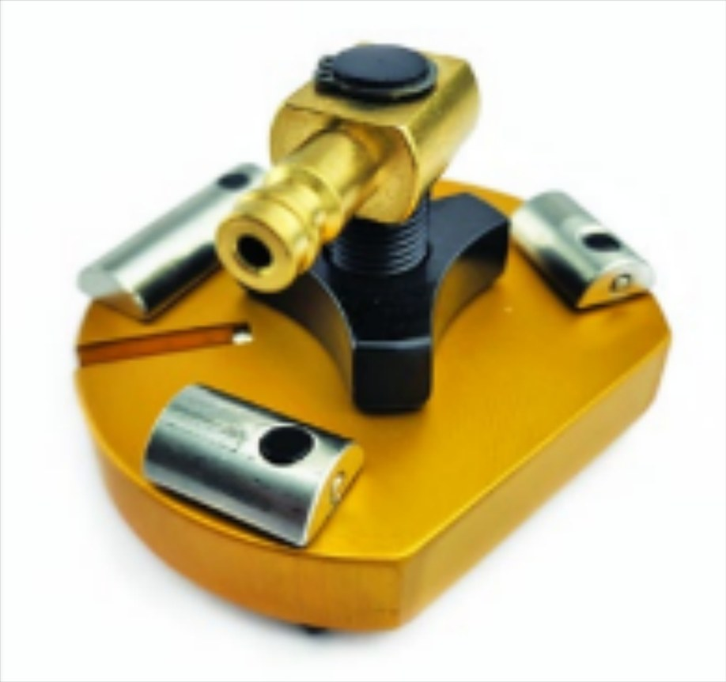

Doc no. MOC-TSB-22-01 // Vol. 22 No. 01 // Jul 1, 2022 // Brake
Toyota Brake Adapter
New design98449
The 98449 small-cam brake adapter has a new design that fits newer Toyota vehicles where the brake fluid reservoir sits against the firewall, such as the RAV4.
What's new
One side of the adapter is now flat. That removes the fitment problems of the earlier design and leaves more room on reservoirs that sit against the firewall.
Contact
For more information, contact the Machine & Equipment Department at 866.244.6621.

Part numbers
| Part No. | Description | Notes |
|---|---|---|
| 98449 | Adapter, Small Cam, Toyota | New design: flat edge on one side |